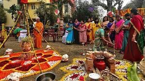
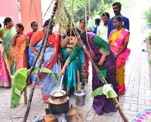

Onam falls in the month of Chingam,  which is the first month according to the Malayalam Calendar.
The celebrations mark the Malayalam New Year, are spread over ten days, and conclude with Thiruvonam.
The ten days are sequentially  known as Atham, Chithira, Chodhi, Vishakam, Anizham, Thriketa, Moolam, Pooradam, Uthradam and Thiruvonam. The first and the last day are particularly important in Kerala and to Malayalee communities elsewhere.[10]
The Atham day is marked with the start of festivities at Thrikkakara Vamanamoorthy Temple, Kochi.
This Vishnu temple is considered as the focal centre of Onam and the abode of Mahabali, with the raising of the festival flag.[36]
Parades are held, which are colourful and depict the elements of Kerala culture with floats and tableaux.[37]
Other days have a diverse range of celebrations and activities ranging from boat races, cultural programs, sports competitions, dance events, martial arts, floral Rangoli – pookkalam, prayers, shopping, donating time or food for charity to spending time with family over feasts. Men and women wear traditional dress. The Kerala sari or Kasavu sari is particularly wore on this day.[38]
Onam (IPA: [oːɳɐm]) is an annual harvest and cultural festival related to Hinduism that is celebrated mostly by the people of Kerala.[4][5] A major annual event for Keralites, it is the official festival of the state[4][6] and includes a spectrum of cultural events.[7][8][4][9]
Onam commemorates Vamana (the fifth avatar of Hindu deity Vishnu) and the generous daitya king Mahabali.[10][11]
According to the Hindu legends, after Indra (the king of the devas) is defeated by Mahabali (the king of the asuras), the devas ultimately seek refuge in Vishnu, who agrees to restore Indra to power.
To do so, Vishnu incarnates as a dwarf man called Vamana.
The devoted Mahabali conducts ritual sacrifices, one of which is attended by Vamana, who requests only three feet (steps) of land to build a fire-altar. Mahabali agrees, despite being warned about Vamana's true nature by the sage Shukra.
Vamana grows in size, and in three strides, encompasses all of existence and beyond. The three worlds are restored to Indra, and Mahabali and the asuras are banished to the netherworld (Patala).[12][13]
However, witnessing Mahabali's love for his subjects, Vamana grants the king's sole wish to visit his kingdom once every year. This homecoming of Mahabali is celebrated as Onam in Kerala every year.[14][11]
The date of Onam celebration is based on the Panchangam, and falls on the 22nd nakshatra Thiruvonam in the month Chingam of Malayalam calendar, which in Gregorian calendar falls between August–September.[15][4]